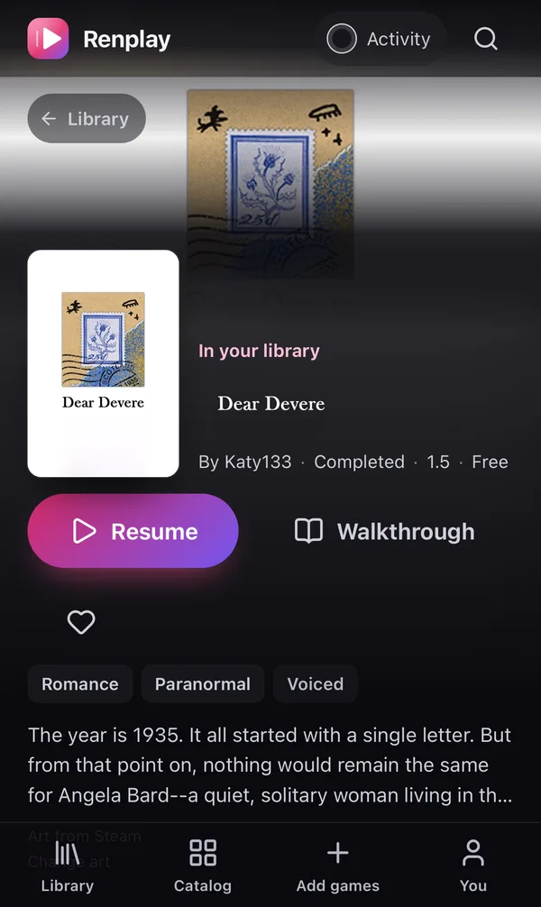

Why Renplay
Visual novels shouldn’t be stuck
on one computer.
Ren’Py games ship as desktop downloads. That is fine until you want to read on the train, on the couch, or on the laptop you took on holiday.
Without Renplay
- ✕One machine per game. Your phone can’t run the PC version, and the Android build, when there is one, is another big download.
- ✕Saves that stay behind. Progress hides in a folder on one computer. Switch devices and you start over or copy files around.
- ✕Updates are a chore. Download 15 GB again, find the save folder, hope the old saves still load.
- ✕A messy folder of zips. No covers, no overview, no idea which version you have.
With Renplay
- ✓Every screen plays it. Any modern browser, including phones and tablets, full screen and smooth.
- ✓Saves follow you. Each save is on your server the moment you make it. Tap Resume anywhere.
- ✓Updates in one click. Add the new download; your saves carry over and Renplay tells you when a tested update is out.
- ✓A real library. Official covers, versions, last played, and one tap back into your story.
How it works
Three steps. The first one is a download.
Add the game
Upload the normal PC download, the same zip you would play on Windows, or drop it into a folder.
Renplay prepares it
It unpacks the game, shrinks the images and builds a web version. Once, in a few minutes. No Ren’Py SDK needed.
Play anywhere
Open Renplay on any device and press Play. Your saves sync while you read.
Your library
Feels like a store you own.
Every game gets its official cover, the developer’s links and the version you have. The first thing you see is the game you were playing.
- Resume in one tap from your latest save, on any device.
- Every save kept, with earlier versions you can restore.
- Update notices when a newer tested version of a game is out.



Made for phones
The couch is a great place to read.
Renplay is built for small screens as much as big ones, down to the camera cutout.
- Full screen, on iPhone from the home screen, on Android with one tap.
- Fits your screen, clear of the notch, and follows you when you turn the phone.
- The screen stays on while you read a long scene.
Everything included
Small touches that add up.
Saves you never lose
Saves, autosaves and unlocked galleries sync the moment the game writes them. Every overwrite keeps the previous version. If the connection drops, they wait and upload later.
Sequels just work
Season two finds season one’s saves, exactly like on desktop.
Bring your saves
Import saves from the desktop version, or export them back.
Mods in the browser
Edit scripts or upload a mod. Your changes survive updates.
A tested catalog
Known games come with their cover, links and the settings that work.
Private by design
Everything runs on your own hardware. No accounts, no telemetry, nobody else’s cloud. Games are prepared without running their code on your server, and covers of adult games can be blurred on shared screens.
Get started
Up and running in a minute.
If you can run a Docker container, you can run Renplay. Point it at a folder for games and one for your saves.
- Run the command and open http://localhost:8080.
- Go to Add games and upload a game’s PC download.
- Press Install, then Play. On your phone, add Renplay to the home screen.
docker run -d --name renplay -p 8080:8080 \
-v ./games:/games \
-v ./data:/data \
ghcr.io/renplay-web/renplay:latest
# compose.yaml services: renplay: image: ghcr.io/renplay-web/renplay:latest ports: ["8080:8080"] volumes: - ./games:/games # games and their downloads - ./data:/data # saves: back this up restart: unless-stopped
Renplay has no accounts, so keep it on your home network or put it behind your own sign-in. Everything else is in the README.
The catalog
Games other players already tested.
The community catalog lists games that work in Renplay: which download to get from the developer, its official cover, and any settings it needs. It never hosts game files. Got one working? Add it in a pull request.
Questions
Good to know.
Which games work?
Games made with Ren’Py 8, which covers most current visual novels. Ren’Py 7 games are not supported yet. The catalog lists games that were tested; most others work too.
Where do I get the games?
From their developers, as you do today: itch.io, Patreon, Steam and so on. Renplay uses the normal PC download. Neither Renplay nor its catalog hosts game files.
Does it need a powerful server?
No. Installing a game uses some CPU for a few minutes; playing is just serving files. Games run in your browser, so a small home server or NAS is plenty. Plan disk space like for the downloads themselves.
Can I still play on desktop Ren’Py?
Yes. Export a game’s saves and they work in the desktop version, and the other way round.
What about adult games?
They work like any other. If other people can see your screen, one switch blurs the covers and save pictures of adult games in that browser.
Is it really free?
Yes, free and open source under the MIT license. If it makes your evenings better, you can support it on Ko-fi.
Your stories, wherever you are.
Set up Renplay tonight and pick up where you left off, on any screen.